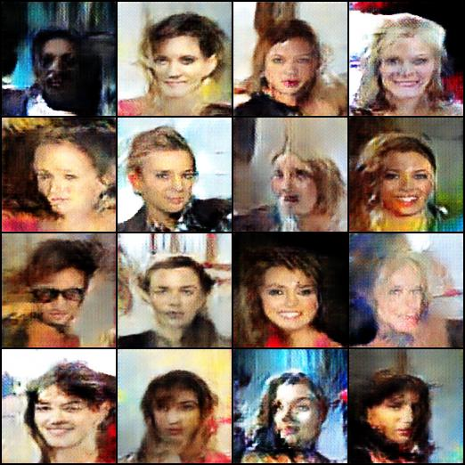
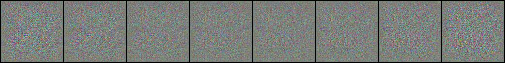
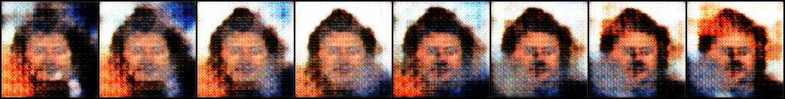
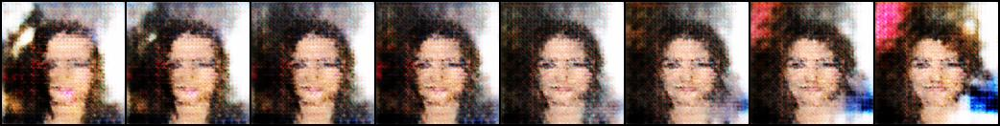
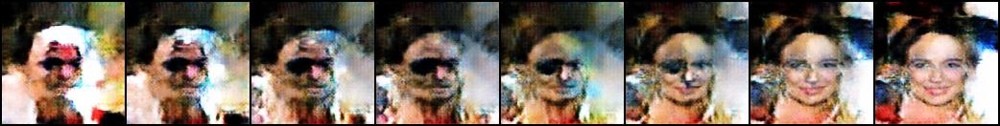
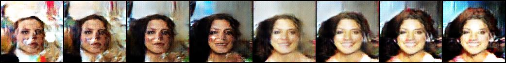

Can deep learning generate novel, realistic images? By pitting a generator against a critic, competition between algorithms produces surprisingly good results.
Generative Adversarial Networks (GANs) are an interesting way to teach a computer image representations. The basic framework: two algorithms are pitted against each other. One (the generator) trains to distinguish between real images and fake image, while the other (the critic) is trained to fool the first. These processes improve in lockstep, though care must be taken to ensure that neither gets too smart too fast. For example, a perfect critic wouldn't give any meaningful learning signal to the generator.
The details are mathematically involved - see a more involved explanation - but here are some results. I trained for 25 epochs on the CelebA dataset (~200,000 images). Below are results at epoch 0, 1, 2, 10, and 24.
    We see interpolation in "face space" from left to right, as the GAN performs linear interpolation in the latent space, then maps to a face. Compare this with pixel interpolation, which is much less likely to produce a face in the middle.
Below we see some randomly generated samples at epochs 0, 1, 2, 10, and 24.